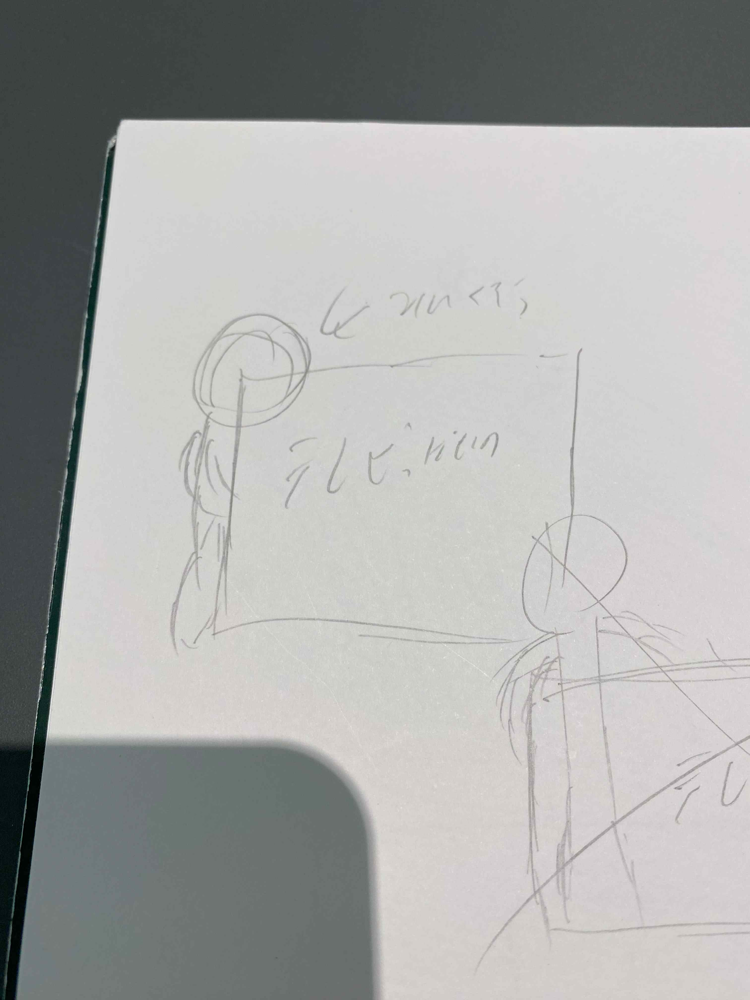
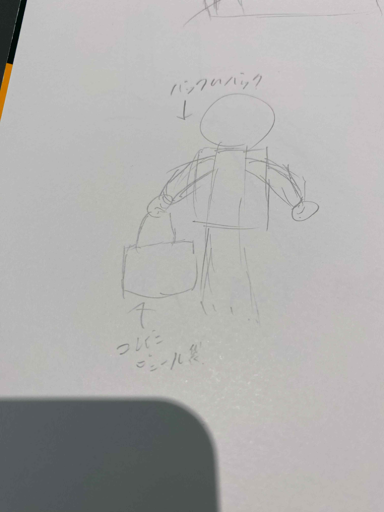
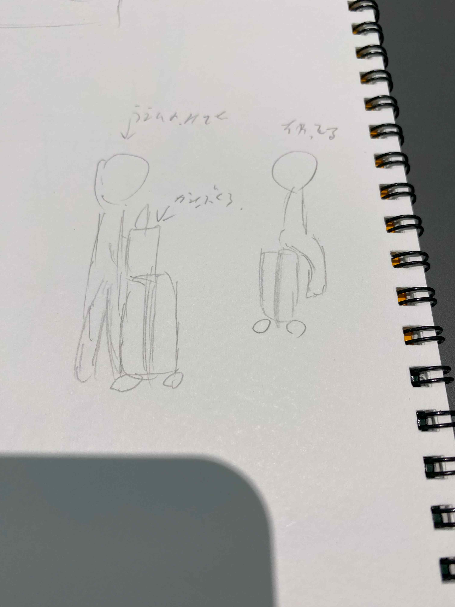
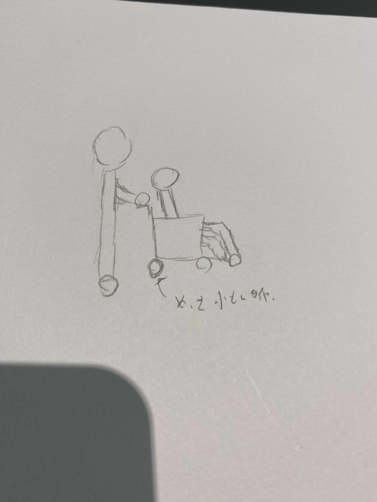

１．テレビを運ぶ人

テレビ（らしき配達物）を運ぶ人
歩道で運んでいるところを見かけめちゃくちゃ前が見づらそうにしていた
テレビ（らしき配達物）を運ぶ人
歩道で運んでいるところを見かけめちゃくちゃ前が見づらそうにしていた
２．リュックがあるのにビニール袋を持つ人

リュックに余裕がありそうなのに、コンビニのビニール袋を手で持つ人
バックに入れないのかな？と思いながら見ていた
リュックに余裕がありそうなのに、コンビニのビニール袋を手で持つ人
バックに入れないのかな？と思いながら見ていた
３．キャリーバックに座る人

キャリーバックに座る人、キャリーバックにさらに荷物を置く人
キャリバックに座る・荷物を置く用の何か器具のようなものがあれば便利そうと考えた
キャリーバックに座る人、キャリーバックにさらに荷物を置く人
キャリバックに座る・荷物を置く用の何か器具のようなものがあれば便利そうと考えた
４．タイヤの小さな車いす

車いすのタイヤがめちゃくちゃ小さかった人
多分誰かに押してもらう用か、タイヤが電気で自走するのかなと考えた
その時は誰かに押してもらってた
車いすのタイヤがめちゃくちゃ小さかった人
多分誰かに押してもらう用か、タイヤが電気で自走するのかなと考えた
その時は誰かに押してもらってた